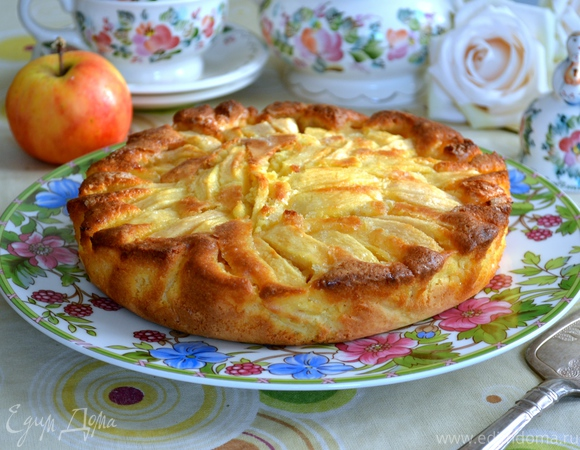

Apple Pie

Description
An apple pie is a fruit pie in which the principal filling ingredient is apples. The earliest printed recipe is from England. Apple pie is often served with whipped cream, ice cream ("apple pie à la mode"), or cheddar cheese.
- Prep time: 30 min
- Cook time: 45 mins
- Servings: 8
Ingredients
Filling
- 900 g (4-5) golden delicious apples
- 15 g (1 tbsp) lemon juice
- 50 g white sugar
- 65 g brown sugar
- 5 g (1 tsp) cinnamon
- 1-2 g nutmeg
- 15 g cornstarch
- 15 g ice water
- 226 g (2 sticks) cold butter, cut into slices
Crust
- 350 g flour
- 5 g salt
- 30 g white sugar
- 225 g butter
- 50-100 ml ice water
Steps
- Peel and cut the apples into 1-2 inch strips
- Put the apples in a bowl and mix in the lemon juice, sugar, cinnamon, nutmeg, and cornstarch and let it sit for 15 mins to release water
- Transfer the filling mixture to a sauce pan and reduce the liquid over medium to low heat for around 15 mins, stirring regularly, then turn off the gas
- While the filling is sitting / reducing, start the crust by putting the flour, salt, sugar, and pieces of butter in a food processor
- Run the food processor until it resembles a coarse sand (5-10 seconds) then start dripping in the ice water until the mixture starts to chunk together
- You’ll know when it’s done if you can pinch the dough with your hand and it sticks together
- Preheat oven to 350°F then start making the pie crust
- Cut the dough in half and roll both halves out with a rolling pin until they are big enough to cover your pie pan (around 9 inch diameter)
- Put the bottom half dough into the pie pan and cut off the excess dough with a knife
- Dump the sauce pan full of the filling into the pie pan and even it out
- Cover the pie filling with the top dough and fold over and tuck in the excess crust
- Use a fork or your fingers to pinch down the top crust to the bottom crust so you don't have air gaps
- Optionally you can now brush on the egg wash to make the crust get a shiny golden brown color when it cooks
- Cut a few slits in the top crust with a knife to give it a nice design and allow for air to release
- Bake 45 minutes at 350°F or until the crust is brown to your liking and the apples are bubbling inside
Go Back